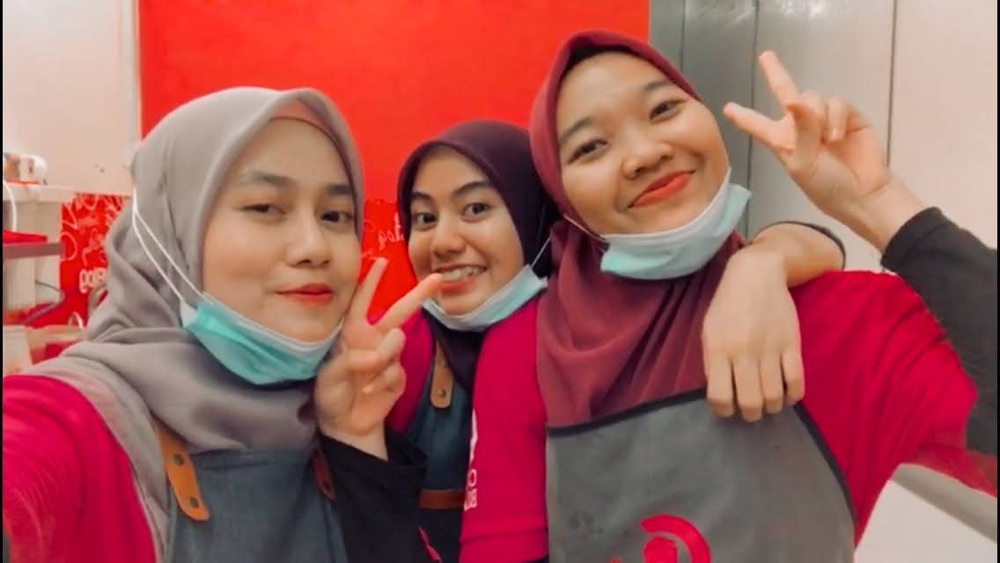
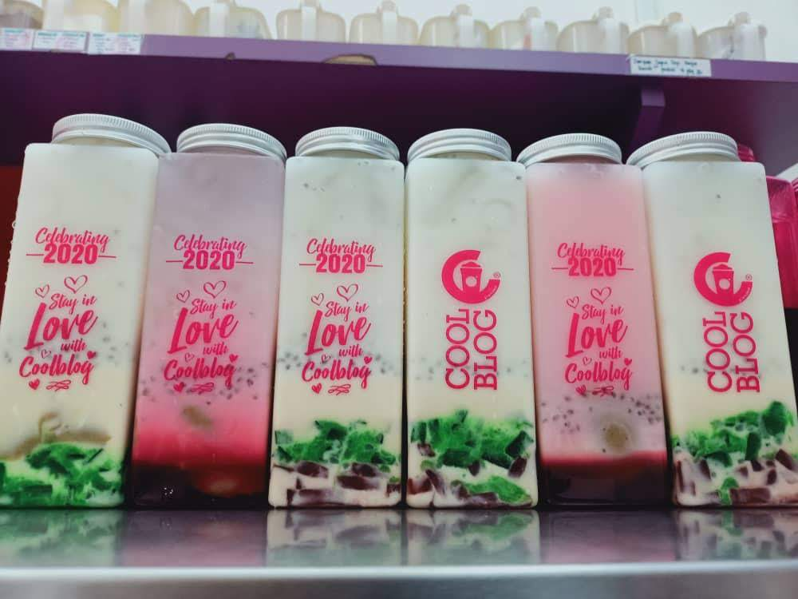
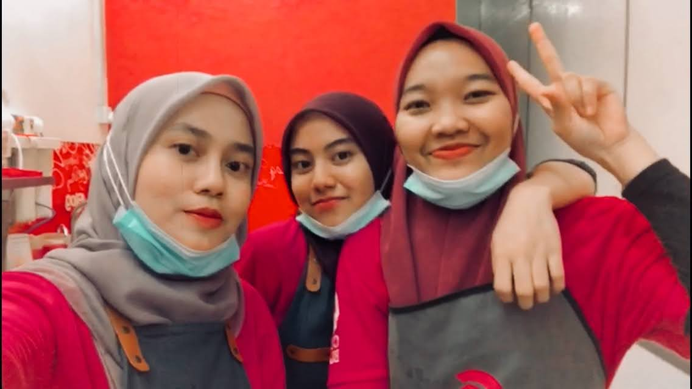

| Homepage | Myself | Education | Working Experience | My Family | My Friends | Gallery | Contact |
|---|

These are the pictures during my working experiences at CoolBlog.
  
Coolblog is a Malaysian-based brand that specializes in selling various types of beverages, particularly flavored tea, smoothies, and desserts. The company has multiple outlets across Malaysia.
As an outlet crew member, We are responsible for preparing and serving beverages and desserts, maintaining cleanliness in the store, and ensuring customer satisfaction.